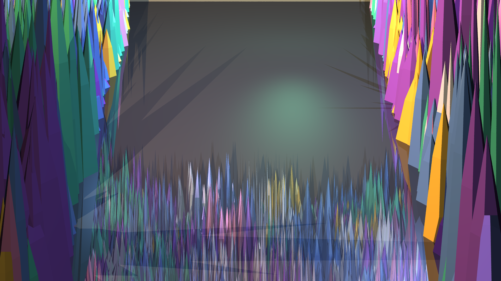
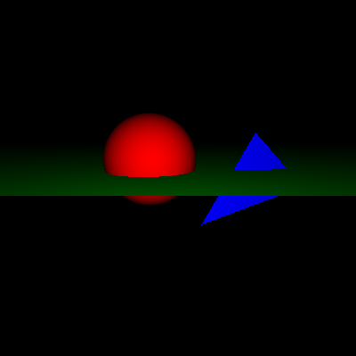
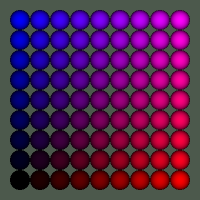
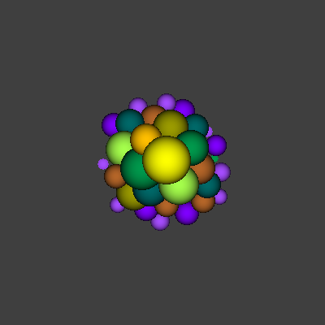

Final Render

This is our Crystal Cavern scene at 1920x1080. The idea was an underground cave with crystal spikes growing up from the floor and hanging down from the ceiling. The floor has a mirror-like reflective material so you can see the crystals reflected in it. There's a clear path down the middle so the camera can look into the cave.
Total triangle count is 1,292,392 which is over the 1 million mark. Without BVH this would be basically impossible to render at this size - with it, it takes around 9 minutes on our machine.
Scene Overview
The cavern is a 400 x 140 x 470 world-space box. Each crystal is built from triangles - a hexagonal base, a trunk section, and a pointed tip, so 18 triangles per crystal. We procedurally place clusters of crystals on both the floor and ceiling, then scatter single ones all over to fill in the gaps.
We cleared a corridor down the middle of the floor so the camera can actually see into the scene without crystals in the way. The floor uses our Reflective material. Walls are Matte with a brownish color. Crystals use Phong with different shininess depending on which color variant they are.
For lighting we have two shadow-casting point lights at different depths to create some depth, plus a few fill lights without shadows to bring out the color. There's also a directional light coming from above to simulate a crack of light in the cave ceiling.
What We Implemented
BRDFs (brdf/)
- Lambertian - diffuse, kd * cd / pi
- GlossySpecular - Phong lobe, ks and exp
- PerfectSpecular - for mirror reflection rays
Materials (materials/)
- Matte - ambient + diffuse
- Phong - adds specular highlight on top
- Reflective - Phong + reflection ray via Whitted
- Cosine - legacy from hw5, kept as-is
Lights (lights/)
- PointLight - with distance-based shadow test
- Directional - parallel rays, like a sun
- each light has a shadows on/off flag
Tracers (tracers/)
- Basic - just hits and shades, no recursion
- Whitted - handles shadows + reflection bounces
Samplers (samplers/)
- Simple - one ray per pixel (hw5 original)
- Jittered - NxN stratified samples per pixel
Acceleration (acceleration/)
- BVH - top-down median split
- toggled with World::use_accel flag
- ~4165x per-pixel speedup at our scene scale
BVH vs No BVH
We ran both versions to get actual numbers. The no-BVH version we kept at 20x15 because it takes almost a minute just for that. With BVH the same scene at 480x360 is about 20 seconds total.
| Config | Resolution | Primitives | Wall Time | Per pixel |
|---|---|---|---|---|
| No BVH (brute force) | 20 x 15 | 1.29M | 50.2 s | 166.6 ms |
| BVH on, low preview | 480 x 360 | 1.29M | 19.9 s | 0.115 ms |
| BVH on, mid | 1280 x 720 | 1.29M | 1 min 10 s | 0.076 ms |
| BVH on, full (2x2 jitter) | 1920 x 1080 | 1.29M | 9 min 13 s | 0.267 ms |
Build Files
Each scene is a separate build file in build/. You compile by swapping in which one you want.
| File | Output size | What it does |
|---|---|---|
| buildCrystalCavern.cpp | 1920 x 1080 | Full quality, jittered 2x2, BVH on |
| buildCrystalCavernMid.cpp | 1280 x 720 | Mid quality, simple sampler, BVH on |
| buildCrystalCavernLow.cpp | 480 x 360 | Quick preview, BVH on |
| buildCrystalCavernNoAccel.cpp | 20 x 15 | No BVH, for timing comparison |
| buildHelloWorld.cpp | 400 x 400 | hw5 regression test |
| buildMvp.cpp | 400 x 400 | hw5 regression test |
| buildChapter14.cpp | 400 x 400 | hw5 regression test |
Compile command
g++ -O3 -fopenmp -std=c++17 \
raytracer.cpp \
world/*.cpp utilities/*.cpp geometry/*.cpp cameras/*.cpp \
image/*.cpp samplers/*.cpp materials/*.cpp brdf/*.cpp \
lights/*.cpp tracers/*.cpp acceleration/*.cpp \
build/buildCrystalCavern.cpp \
-o scene.exe && ./scene.exeOutput is written to scene.png in the current directory.
HW5 Outputs (regression check)
These are the locked hw5 outputs. Our new code doesn't touch the hw5 path at all so they still match byte for byte.



Bonus stuff
- Reflections - the floor is Reflective so it bounces back a mirror ray using PerfectSpecular BRDF. You can see crystals in the floor.
- OpenMP - outer pixel loop has
#pragma omp parallel for schedule(dynamic, 4). Compile with -fopenmp. Scales with the number of cores. - Per-light shadow flag - Light base class has a
shadowsbool. Some lights cast shadows, some are just fill lights. Makes the scene look better without killing performance. - Jittered AA - Jittered sampler splits each pixel into NxN cells and jitters the sample within each. Reduces aliasing at edges.
Contributions
- BRDF classes
- Matte/Phong/Reflective materials
- Whitted tracer
- reflection math
- BVH build and traversal
- Jittered sampler
- OpenMP setup
- timing runs
- crystal cavern generator
- Light base + PointLight + Directional
- scene tuning and lighting
- website and readme
References
- Suffern, K. Ray Tracing from the Ground Up. CRC Press. - main reference for basically everything, BRDF formulas, Whitted tracer structure, sampler design.
- Pharr, Jakob, Humphreys. Physically Based Rendering. - used for the BVH construction and traversal.
- Shirley. Ray Tracing in One Weekend. - AABB slab intersection reference.
- Moller-Trumbore triangle intersection paper - used for Triangle::hit implementation.
- Naica crystal cave photos - visual reference for the scene idea.
- cppreference, stackoverflow - various C++17 / OpenMP questions.